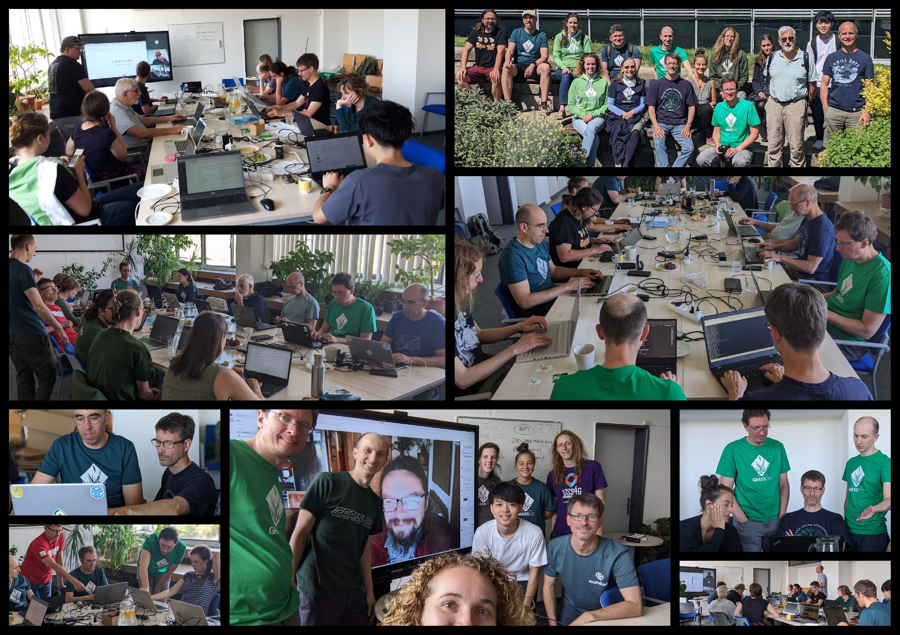

Innovations in
Open Data Products and
Cloud-based Geoprocessing
Markus Neteler
& mundialis GmbH & Co. KG
About the presenter...

New open data sets, freshly produced
Climate data time series in higher resolution
- Time series of continental ERA5-Land raster data, spatially improved from 9 km resolution to 1 km using CHELSA data:
- Temperature (2000 - 2021)
- Precipitation (2000 - 2021)
- Relative humidity (2000 - 2021) - after
Wright 1997 - Motivation: Calculation of heat island risk, derivation of regional trends, human well-being (thermoregulation of the body).
Germany land-cover mapping based on Sentinel-2 data and monitoring of land use changes
LULC and change detection maps from S2, with r.incora, a related GRASS GIS addon incl. creation of training points from rule sets.
For details, see this blog post. Funding: "incora" mFUND project (FKZ: 19F2079C)
Germany land-cover mapping based on Sentinel-2 data and monitoring of land use changes
- LULC data from Sentinel-2 with 6 classes,
for 2016, 2019, 2020, 2021 (GNOS search) - Change detection between different maps

Building extraction

- For (urban) planning purposes it is essential to have accurate data of the current building stock.
- The data sets of the "house perimeters" are not available as open data in all federal states.
- Automated extraction from aerial photographs and possibly other current sources (LiDAR, nDSM, ...)
- Extraction of buildings and green roofs
- Software now available on GitHub
(https://github.com/mundialis/rvr_interface)
Detection of single trees

- Relevance: see urban climate, traffic safety obligation, biomass estimates, ...
- Software now available on GitHub
(https://github.com/mundialis/rvr_interface)
The GIS army knife - developed by the community: GRASS GIS
GRASS GIS general features
- Free and open source, you can use, modify, improve, share
- Large amount of tools: +500 core modules, +300 addons
- Graphical User Interface and command line
- C API, Python API and libraries
- Interface/connection with R, QGIS, REST API, WPS, etc.
- Different data types supported: raster (including satellite imagery), 3D raster or voxel, vector and, space-time datasets.
GRASS GIS: All-in-one software suite
- All matured tools available right away
- Download of experimental tools possible
- Network analysis, hydrology, remote sensing, vector topology, time series, …
Integration of GRASS GIS and Jupyter Notebooks
- Notebooks: Mix of text, code, results, images, …
- Usage: Prototyping, reproducibility, tutorials, …
- Now in GRASS GIS: Python functions for easy integration


tinyurl.com/grass-rc2 (run in Binder)
by Vaclav Petras, Anna Petrasova, Caitlin Haedrich
Boxplots in space-time raster data set
t.rast.boxplot draws boxplots of the raster in a space-time raster data set.

addon by Paulo van Breugel
GRASS Community Meeting Prague 2023
Work and party: 40 years of GRASS GIS! Code contributions
GRASS GIS development is GitHub-centered: core, addons, website
- Fill bug reports or feature requests
- All issues and PR's are publicly visible
- Ask, comment, suggest also in Github Discussions
- "Fork me on GitHub" and suggest changes or fix bugs via pull requests
- Create your own addon! See this nice workshop for a guideline: How to write a Python tool for GRASS

Going cloud: actinia
actinia: The GRASS GIS REST API
- Open source REST API for scalable, distributed, high performance processing of geo data using GRASS GIS
- More details in this FOSS4G presentation
- Wanna try? Follow this tutorial for a demo user
- Available on : https://github.com/actinia-org/actinia-core

 by Carmen Tawalika, Anika Weinmann, Markus Neteler, Sören Gebbert, …
by Carmen Tawalika, Anika Weinmann, Markus Neteler, Sören Gebbert, …
actinia - QGIS plugin
actinia connector:a QGIS plugin to control actinia from QGIS (under development)
actinia - leafmap
compute in actinia, visualize in leafmap
by Qiusheng Wu, Markus Neteler, …
Talk to us!
mundialis GmbH & Co. KG
Koelnstrasse 99
53111 Bonn
info@mundialis.de
www.mundialis.de
Data: https://data.mundialis.de
Presentation: https://github.com/neteler/grass-gis-talks-markus/
@mundialis